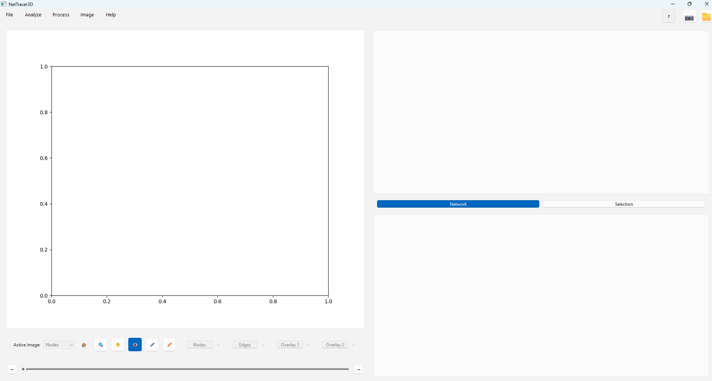
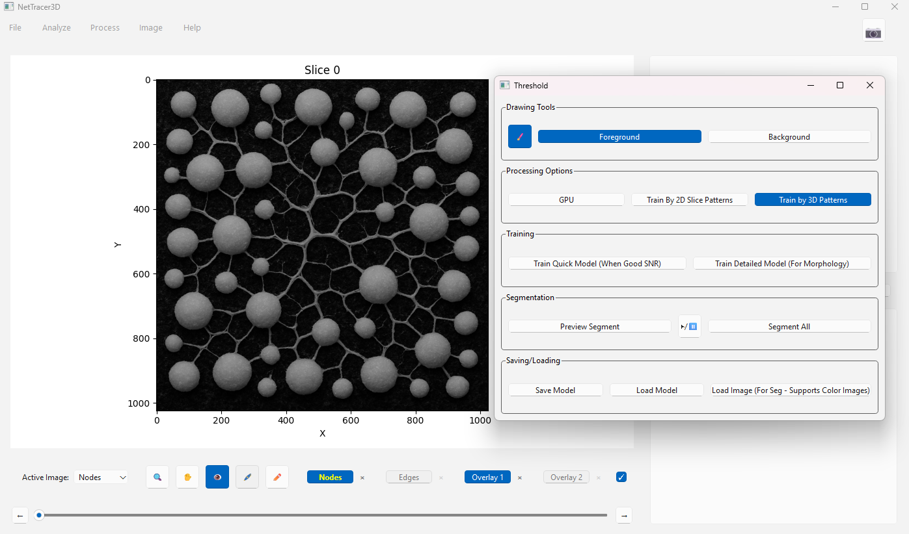
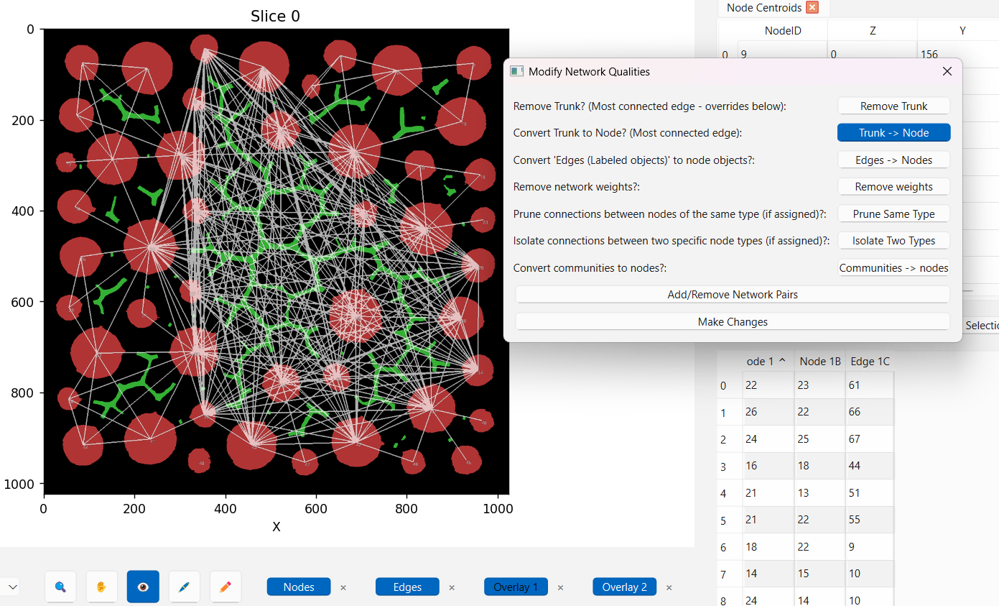
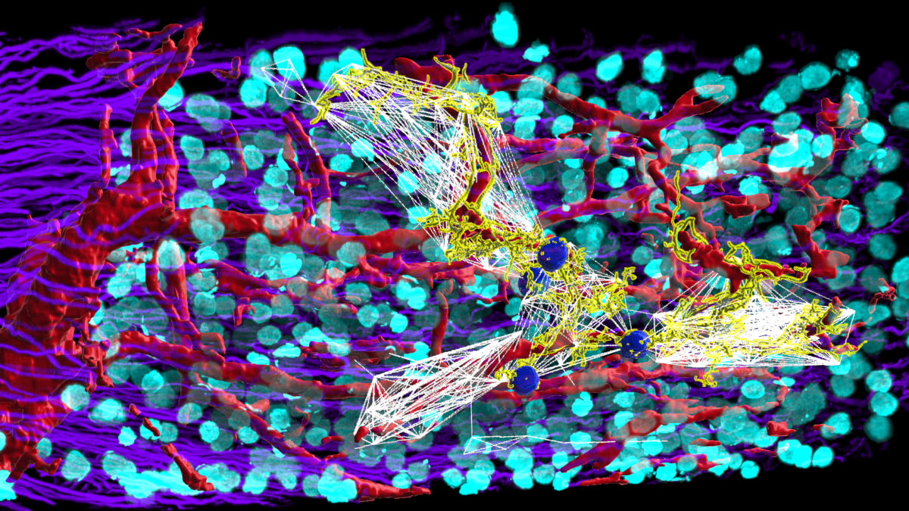
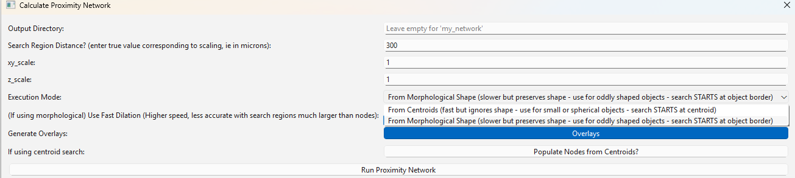

Quickstart - Segmenting Data and Generating Networks
This guide will help you get started with NetTracer3D by walking through a simple example.
Launch NetTracer3D
After Installation, you can launch NetTracer3D from the command line:
nettracer3d
This will open the main application window.
Interface Overview
{kind=link}
The NetTracer3D interface consists of:
(Left) Main Visualization Area: The image viewer window where the 3D stack is displayed as 2D slices.
(Bottom) Control Panel: Widgets for quick interaction with the image viewer window.
(Top Right) Tabulated Data: Where data tables from analysis will be placed.
(Bottom Right) Network Data: Where paired nodes in your network will be organized.
(Top) Menu Bar: Options to load/export data and run analysis.
In addition, since it will be usually run out of the command window, be sure to check your command window for printed updates about what NetTracer3D is actually doing.
The Control Panel
{kind=link}
Before we start with an example, we’ll go over the control panel on the bottom. It includes the following widgets:
- The Active Image widget
Clicking on the carrot will allow you to select which image is ‘Active’. Many processing/analysis functions will by default run on the image that is ‘Active’. Furthermore, when clicking or drawing in the Image Viewer Window, the ‘Active’ image is the one that will be referenced.
- The zoom widget (magnifying glass - Shortcut Z)
Press z or click the magnifying glass widget to enter the zoom mode. Clicking the Image Viewer Window in zoom mode will cause you to zoom in. Right clicking will cause you to zoom out.
- The pan widget (hand - Shortcut middle mouse)
Press middle mouse button or click the hand widget to enter pan mode. Use the mouse to drag along the Image Viewer Window while in pan mode to move around the image.
- The highlight overlay display widget (eye - Shortcut X)
Press x or click the eye widget to toggle whether the highlight overlay is visible. Clicking on objects in the node/edges channels (and certain other functions) will generate a yellow highlight atop the image viewer window that denotes what is selected.
- The image markup widget (pen)
- Click the pen widget to enter the image markup mode. While in this mode, clicking on the active image will write values of 255 directly into the image data where you are clicking.
- While in pen mode, the following additional functionalities are offered:
Left click will erase any positive data and write 0 directly into the image.
Ctrl + Mouse Wheel will enlarge the draw/erase area.
Press F to swap to a fill can. Clicking with the fill can will write the val 255 into the entirety of any background (0 value) areas in your image that are connected to the clicked point. While in fill can mode only, ctrl+z will undo the most recent action.
Press D in either pen or fill can mode to enable the 3D version of these tools. The 3D pen will draw along several image stacks at once. The number of stacks above you are drawing on is indicated by the number above the 3D pen (i.e. a value of 5 will write into the current stack, 2 above, and 2 below). Use the mousewheel to enlarge or decrease this number. The 3D fill can will fill the entirety of a 3D hole (which can be the entire image background if not careful). Like the 2D fill can, use ctrl+z while still in the fill can mode to undo the last fill-can action.
- The threshold/segment widget (pencil)
Click the pencil widget to open the menu to either Threshold or use Machine-Learning segmentation. Please see the Threshold/Segment guide for more information.
- The channel widgets (Nodes, Edges, Overlay1, Overlay2)
Click the channel widgets to toggle whether the channel is visible. The ‘x’ widget located next to the channel buttons will prompt if you want to delete that channel or not.
- The scrollbar.
The knob at the center of the scroll bar can be moved with the mouse to scroll through the 3D image stack. Use the left or right arrows on either side to scroll one frame at a time. Shift + mouse wheel can also be used to scroll through the stack. Ctrl + Shift + Mouse Wheel will result in a faster scroll.
Loading an Image
To load an image, select File -> Load. You will see the following options:
Load Network3D Object
Load Nodes
Load Edges
Load Overlay 1
Load Overlay 2
Load Network
Load Misc Properties
Options 2-5 correspond the the four image viewing channels that are supported in NetTracer3D. Whenever you are beginning with a new image that you would like to segment, load it into the nodes channel with ‘Load Nodes’. This will prompt you to browse for an image in the .tif/.tiff (for microscopic data), .nii (for medical images), or .jpg/.png file formats.
Note that if your image has real value scaling (ie microns per pixel), those will not automatically populate and should be assigned in ‘Image -> Properties’ before any processing occurs.
We will begin by loading this cartoon-rendition of a slime mold as an example:

We will use File -> load nodes. Since we are loading an RBG image in this case, we say ‘yes’ to the prompt asking if this is a color image so it can be converted to grayscale.

Note the Image Viewer Window shows nodes-images through a red filter by default, although this can be changed.
Segmenting Data
Most of the algorithms in NetTracer3D expect either binary images (where all values are 0 or positive), or labeled images, which are grayscale images that have grouped objects into distinct labels (ie 1, 2, 3, etc). Presegmented data can be used directly, however our data is not yet segmented, so we will use NetTracer3D’s segmentation options to process it.
To begin a segmentation, click on the pencil widget. You will be prompted with the following window:
{kind=link}
Execution mode can be used to select to segment by either direct intensity thresholding (for when SNR is already good or to sort out specific labels), or volume based thresholding (for already segmented images - to sort out noise or select a specific range of objects).
Press select to open a corresponding threshold window.
Machine Learning can be used to segment by feature morphology in the image. This is a more general use case that can be used on most types of images to create a segmentation. In this case, we will select this option.
Using the Machine Learning Segmenter
Machine Learning segmentation can be executed on any image in the nodes channel. It will require use of Overlay1, Overlay2, and the highlight overlay. Because of this, it is recommended to segment images in seperate sessions as processing binary data.
{kind=link}
Referencing the above image, the ML segmentation uses the following options:
Nodes: Contains the data of the image we are segmenting.
Overlay1: Contains the training data.
Overlay2: Will contain the final segmentation once it’s been generated.
Highlight Overlay: Will display segmentation previews.
Brush Widget (Drawing Tools): Click to enter the brush mode. This works similar to the pen mode described above, but without 3D/Fill Can features. Click with the brush in the Image Viewer Window to mark what objects we want to keep (Foreground) and what objects we want to exclude (Background). This training data will be written directly into Overlay1 (with vals of 1 representing the foreground and 2 the background). Right click can be used to erase these markings. Use ctrl + mouse wheel to enlarge/shrink the brush.
Foreground (Drawing Tool): Select to have the brush mark foreground (denoted by green markings). Press a to toggle with background.
Background (Drawing Tools): Select to have the brush mark background (denoted by red markings). Press a to toggle with foreground.
Train by 2D Slice Patterns (Processing Options): When selected, the model will be trained using 2D feature maps.
Train by 3D Patterns (Processing Options): When selected, the model will be trained using 3D feature maps.
Train Quick Model (Training): Click to train the model to segment your image based on the regions selected in your training data.
Train More Detailed Model (Training): Does the same as above but has additional feature training.
Preview Segment (Segmentation): When clicked, the model will begin segmenting your image as a preview, without interrupting the current training session. Use this to assess the current state of the model to decide if it needs additional training. This preview will be displayed in the highlight overlay, with foreground denoted by yellow and background denoted by blue.
Segment All (Segmentation): When clicked (after a warning), the training session will pause to segment the entire image with the current model. It is recommended that you save your images before doing this (File -> Save Network 3D Object As), in case the segmentation needs to be interrupted (It can only be paused by terminating the program). When finished, the binary segmentation will be placed in Overlay 2.

Above: Example ML-Segmentation in process. I have marked foreground with green markings and background with red markings. The yellow regions have been selected by the current model as foreground, and the blue as background. Longer training sessions will produce more specific segmentation results.
Saving results:
To save the resulting segmentation, use ‘File -> Save Overlay2 As’. To save the training data (to reuse or retrain the model later), use ‘File -> Save Overlay1 As’.
‘File -> Save Network3D Object As’ can be used to save all images together.
We will save the above segmentation to be used as nodes in our network.
Denoising the Segmentation
Although we have succesfully segmented our image, there are examples of noise that have slipped through. Luckily, NetTracer3D offers several options to clean up binary segmentations. In this instance, we will be using volume thresholding to clean up noise.
First, I load a new instance of NetTracer3D and load my new binary slime mold segmentation into the nodes channel.
Next, I click the pencil widget, change the ‘Execution Mode’ to ‘Using Volumes’, and choose ‘Select’ to open the Volume Threshold Window.
When prompted, I allow the system to ‘label’ my nodes (Assign each binary object a distinct numerical value).
{kind=link}
*Above: De-noising with the Volume Thresholder. I use the red bar to exclude the small objects. On the left, the objects I stand to keep are shown in yellow.
Segmenting with the Volume Thresholder is simple. The displayed histogram represents the distribution of volumes of objects in my image. The red bar can be dragged to exclude objects with low volumes while the blue bar can be dragged to exclude objects with high volumes.
Alternatively, I can manually enter the minimum/maximum values to retain.
Pressing Preview will have the Highlight Overlay show which objects we are including in yellow.
Pressing apply threshold will segment the image as shown in the preview.
I apply this threshold and finally use ‘Process -> Image -> Fill Holes’ to fill any holes in my binary image, resulting in the following finished segmentation:
{kind=link}
Generating a Network Using Edges
Similar to the nodes, we segment the edges from the image (I did not show this process but it would be the same steps as above, just selecting the connection regions rather than the nodes). This is the image through which the nodes will be connected. (In imaging this will often be on a different channel, such as an overlapping image of nerves or vessels. In this demo, we use the same image for both). We load these in with ‘File -> Load Edges’ and select ‘Process -> Calculate -> Calculate Connectivity Network’.
{kind=link}
We enter the following params and execute the network generation:

In short, these params are currently telling the nodes to ‘search’ 30 pixels outwards (Node search param) for edges to connect to. Nodes that share an edge will be connected in the resultant network. For more information on using this algorithm, see ‘Process -> Calculate -> Calculate Connectivity Network…’
This yields the following network:
{kind=link}
The nodes/edges images are tweaked based on how the network-search param used them (to ensure consistency with the output). In Overlay1, we have generated a binary overlay displaying the direct network connections (white lines). In the bottom right table, we can see the IDs of the linked nodes in the first two columns, and the ID of each pair’s associated edge in the third column. In this case, the majority of nodes are joined through a large hub-edge in the center, while nodes along the sides have less direct connections. To elucidate the connectivity here, we can convert this central edge trunk into a single node using ‘Process -> Modify Network’ as shown:
{kind=link}
This results in the trunk becoming a node. The resultant image with network overlay alongside a graph of the network is shown below:

This network was displayed using the ‘Analyze -> Show Network’ option while selecting louvain community detection
If we load back in the original image with the overlay, we can see how the image information has been compressed to a set of connected integers.
{kind=link}
While an image like this would not be too hard to manually label, imagine doing this for thousands or tens of thousands of nodes throughout a 3D image. This is where NetTracer3D shines! For example, the image below is one such usage where I created neural networks between groups of glomeruli in the human kidney from 3D lightsheet images I captured:
{kind=link}
Generating a Network Based on Proximity
We will go over another simple example of creating networks. This one is even easier, as it only requires nodes to function, and simply groups nodes as connected pairs based on their distance to each other. Open a new instance of NetTracer3D and once more load in the binary segmentation of the nodes that was created above. First, use ‘Process -> Image -> Label Objects’ to assign each binary object a unique label. Next, select ‘Process -> Calculate -> Calculate Proximity Network’.
{kind=link}
Here we can see the menu to generate proximity networks. The search distance here is set to 300, which means nodes will look 300 pixels out for connections (although this will correspond to your scalings). Note there are two options available for searching, shown in the carrot dropdown next to ‘Execution Mode’. The first option searches from centroids and works quite well with big data as the data structure is far simpler. The second option searches from object borders and may be slower on large images by comparison. In this case, I use the second option since these objects are heterogenously sized. For more information on using this algorithm, see ‘Process -> Calculate -> Calculate Proximity Network…’
And after algorithm execution:


Proximity networks are a generic way to group together objects in 3D space and are ideal, for example, for grouping together cellular neighborhoods. One use for such cellular neighborhoods is grouping them into communities and analyzing their composition!
Exporting Data
Use ‘File -> Save As’ to export any channels that have been generated/edited in NetTracer3D, in the .tif file format. To bul save, choosing ‘Save As Network3D Object’ will have NetTracer3D dump most of the active data into a new folder in a format it can later reload with ‘Load Network3D Object’. Regarding tables and networks, they all can be exported with right click as either .csv or .xlsx files for outside analysis. Furthermore, networks feature additional export options for use with other network analysis software, such as Gephi.
NetTracer3D is designed for some amount of end-to-end functionality, however exporting allows support for downstream analysis in other software such as ImageJ or Microsoft Excel.
Using Network (And/Or Image) data in python
NetTracer3D is mainly designed to be interacted via its GUI, but some users may want to extract its properties for direct use in a python script. This is most useful with the network property, which is saved as a networkx graph object, as a user would be able to leverage the entire networkx toolbox for their own analysis pipelines.
NetTracer3D organizes many of its properties into the ‘Network_3D’ class. The easiest way to export NetTracer3D data into code is to just save the ‘Network_3D’ objects in the GUI, then in python, creating a new ‘Network_3D’ object, loading in its components from the saved data, and calling those properties. For example:
See https://networkx.org/ for information about using the networkx graph object.
from nettracer3d import nettracer as n3d
my_network = n3d.Network_3D() #Declare a new Network_3D object
my_network.load_network(file_path = 'path/to/my/network/file/that/netracer3d_gui/had/saved/output_network.csv') #If we just want to load the networkx graph
my_network.assemble(directory = 'path/to/my/directory/where/netracer3d_gui/saved/the/network3d_object') #If we want to load all the properties. Note that this function looks for the files with the names that the 'Save (As) Network 3D Object' option assigned them.
#Using the properties in code directly (Note these will return None if they had not been assigned to anything - ie, if the file used to .assemble() was missing them):
nodes = my_network.nodes #The nodes channel data, as a numpy array
edges = my_network.edges #The edges channel data, as a numpy array
overlay_1 = my_network.network_overlay #The overlay1 channel data, as a numpy array
overlay_2 = my_network.id_overlay #The overlay2 channel data, as a numpy array
network = my_network.network #The network data, as a network x graph object
node_centroids = my_network.node_centroids #Centroids of nodes, as a python dictionary
edge_centroids = my_network.edge_centroids #Centroids of edges, as a python dictionary
node_communities = my_network.communities #Communities of nodes, as a python dictionary
node_identities = my_network.node_identities #Identities of nodes, as a python dictionary
xy_scale = my_network.xy_scale #The dimensional scaling of the flat xy plane that corresponds to the image used to generate this network, as a float.
z_scale = my_network.z_scale #The z step size of the 3D stack that corresponds to the image used to generate this network, as a float.
#If I do something to the above properties, and want to save, the contents of the Network_3D object can be saved with this method:
my_network.dump(directory = 'path/to/save/the/outputs')
Next Steps
Once you have a hang on generating the default network types, proceed to the Labeling Branches and Branch Networks to learn about using NetTracer3D to label branches of objects and create branch networks.